Group 17 Elements
Fluorine, chlorine, bromine, iodine and astatine are members of
Group 17. These are collectively known as the halogens (Greek
halo means salt and genes means born i.e., salt producers). The
halogens are highly reactive non-metallic elements. Like Groups 1
and 2, the elements of Group 17 show great similarity amongst
themselves. That much similarity is not found in the elements
of other groups of the periodic table. Also, there is a regular
gradation in their physical and chemical properties. Astatine is a
radioactive element.
Occurrence:
Fluorine and chlorine are fairly abundant while bromine and iodine
less so. Fluorine is present mainly as insoluble fluorides (fluorspar
CaF2, cryolite Na3AlF6 and fluoroapatite
3Ca3(PO4)2.CaF2) and small
quantities are present in soil, river water plants and bones and teeth
of animals. Sea water contains chlorides, bromides and iodides of
sodium, potassium, magnesium and calcium, but is mainly sodium
chloride solution (2.5% by mass). The deposits of dried up seas
contain these compounds, e.g., sodium chloride and carnallite,
KCl.MgCl2.6H2O. Certain forms of marine life contain iodine in their
systems; various seaweeds, for example, contain upto 0.5% of iodine
and Chile saltpetre contains upto 0.2% of sodium iodate.
Electronic Configuration:
All these elements have seven electrons in their outermost shell
(ns2np5) which is one electron short of the next noble gas.
Atomic and Ionic Radii:
The halogens have the smallest atomic radii in their respective periods
due to maximum effective nuclear charge. The atomic radius of fluorine
like the other elements of second period is extremely small. Atomic and
ionic radii increase from fluorine to iodine due to increasing number
of quantum shells.
Ionisation Enthalpy:
They have little tendency to lose electron. Thus they have very high
ionisation enthalpy. Due to increase in atomic size, ionisation enthalpy
decreases down the group.
Electron Gain Enthalpy:
Halogens have maximum negative electron gain enthalpy in the
corresponding periods. This is due to the fact that the atoms of these
elements have only one electron less than stable noble gas configurations.
Electron gain enthalpy of the elements of the group becomes less negative
down the group. However, the negative electron gain enthalpy of fluorine
is less than that of chlorine. It is due to small size of fluorine atom. As
a result, there are strong interelectronic repulsions in the relatively
small 2p orbitals of fluorine and thus, the incoming electron does not
experience much attraction.
Electronegativity:
They have very high electronegativity. The electronegativity decreases
down the group. Fluorine is the most electronegative element in the
periodic table.
Physical Properties:
Halogens display smooth variations in their physical properties. Fluorine
and chlorine are gases, bromine is a liquid and iodine is a solid. Their
melting and boiling points steadily increase with atomic number. All
halogens are coloured. This is due to absorption of radiations in visible
region which results in the excitation of outer electrons to higher energy
level. By absorbing different quanta of radiation, they display different
colours. For example, F2, has yellow, Cl2 , greenish yellow, Br2, red and
I2, violet colour. Fluorine and chlorine react with water. Bromine and
iodine are only sparingly soluble in water but are soluble in various
organic solvents such as chloroform, carbon tetrachloride, carbon
disulphide and hydrocarbons to give coloured solutions.
One curious anomaly we notice is the smaller
enthalpy of dissociation of F2 compared to that of Cl2 whereas X-X
bond dissociation enthalpies from chlorine onwards show the expected
trend: Cl – Cl > Br – Br > I – I. A reason for this anomaly is the relatively
large electron-electron repulsion among the lone pairs in F2 molecule
where they are much closer to each other than in case of Cl2.
Chemical Properties:
Oxidation states and trends in chemical reactivity:
All the halogens exhibit –1 oxidation state. However, chlorine, bromine
and iodine exhibit + 1, + 3, + 5 and + 7 oxidation states also as
explained below:
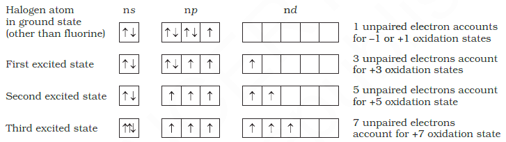
The higher oxidation states of chlorine, bromine and iodine are realised
mainly when the halogens are in combination with the small and highly
electronegative fluorine and oxygen atoms. e.g., in interhalogens, oxides
and oxoacids. The oxidation states of +4 and +6 occur in the oxides and
oxoacids of chlorine and bromine. The fluorine atom has no d orbitals
in its valence shell and therefore cannot expand its octet. Being the most
electronegative, it exhibits only –1 oxidation state.
All the halogens are highly reactive. They react with metals and
non-metals to form halides. The reactivity of the halogens decreases
down the group.
The ready acceptance of an electron is the reason for the strong
oxidising nature of halogens. F2 is the strongest oxidising halogen and
it oxidises other halide ions in solution or even in the solid phase. In
general, a halogen oxidises halide ions of higher atomic number.
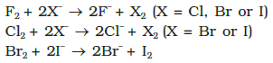
The decreasing oxidising ability of the halogens in aqueous solution
down the group is evident from their standard electrode potentials
which are dependent on the parameters indicated below:
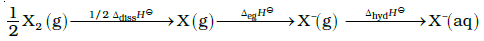
The relative oxidising power of halogens can further be illustrated
by their reactions with water. Fluorine oxidises water to oxygen whereas
chlorine and bromine react with water to form corresponding hydrohalic
and hypohalous acids. The reaction of iodine with water is nonspontaneous.
In fact, I– can be oxidised by oxygen in acidic medium;
just the reverse of the reaction observed with fluorine.
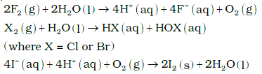
Anomalous behaviour of fluorine:
Like other elements of p-block present in second period of the periodic
table, fluorine is anomalous in many properties. For example, ionisation
enthalpy, electronegativity, and electrode potentials are all higher for
fluorine than expected from the trends set by other halogens. Also, ionic
and covalent radii, m.p. and b.p., enthalpy of bond dissociation and electron
gain enthalpy are quite lower than expected. The anomalous behaviour of
fluorine is due to its small size, highest electronegativity, low F-F bond
dissociation enthalpy, and non availability of d orbitals in valence shell.
Most of the reactions of fluorine are exothermic (due to the small
and strong bond formed by it with other elements). It forms only one
oxoacid while other halogens form a number of oxoacids. Hydrogen
fluoride is a liquid (b.p. 293 K) due to strong hydrogen bonding. Other
hydrogen halides are gases.
(i) Reactivity towards hydrogen:
They all react with hydrogen to give
hydrogen halides but affinity for hydrogen decreases from fluorine
to iodine. Hydrogen halides dissolve in water to form hydrohalic
acids. The acidic strength of these acids varies in the order:
HF < HCl < HBr < HI. The stability of these halides decreases down
the group due to decrease in bond (H–X) dissociation enthalpy in
the order: H–F > H–Cl > H–Br > H–I.
(ii) Reactivity towards oxygen:
Halogens form many oxides with oxygen
but most of them are unstable. Fluorine forms two oxides OF2 and
O2F2. However, only OF2 is thermally stable at 298 K. These oxides
are essentially oxygen fluorides because of the higher
electronegativity of fluorine than oxygen. Both are strong fluorinating
agents. O2F2 oxidises plutonium to PuF6 and the reaction is used
in removing plutonium as PuF6 from spent nuclear fuel.
Chlorine, bromine and iodine form oxides in which the oxidation
states of these halogens range from +1 to +7. A combination of kinetic
and thermodynamic factors lead to the generally decreasing order of
stability of oxides formed by halogens, I > Cl > Br. The higher oxides
of halogens tend to be more stable than the lower ones.
Chlorine oxides, Cl2O, ClO2, Cl2O6 and
Cl2O7 are highly reactive
oxidising agents and tend to explode. ClO2 is used as a bleaching
agent for paper pulp and textiles and in water treatment.
The bromine oxides, Br2O, BrO2 , BrO3 are the least stable
halogen oxides (middle row anomally) and exist only at low
temperatures. They are very powerful oxidising agents.
The iodine oxides, I2O4 , I2O5,
I2O7 are insoluble solids and
decompose on heating. I2O5 is a very good oxidising agent and is
used in the estimation of carbon monoxide.
(iii) Reactivity towards metals:
Halogens react with metals to form
metal halides. For example, bromine reacts with magnesium to give
magnesium bromide.
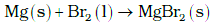
The ionic character of the halides decreases in the order MF >
MCl > MBr > MI where M is a monovalent metal. If a metal exhibits
more than one oxidation state, the halides in higher oxidation
state will be more covalent than the one in lower oxidation state.
For example, SnCl4, PbCl4, SbCl5 and UF6 are more covalent than
SnCl2, PbCl2, SbCl3 and UF4 respectively.
(iv) Reactivity of halogens towards other halogens:
Halogens combine amongst themselves to form a number of compounds known as
interhalogens of the types XX′ , XX3′, XX5′ and XX7′ where X is a
larger size halogen and X′ is smaller size halogen.
Chlorine
Chlorine was discovered in 1774 by Scheele by the action of HCl on
MnO2. In 1810 Davy established its elementary nature and suggested the
name chlorine on account of its colour (Greek, chloros = greenish yellow).
Preparation
It can be prepared by any one of the following methods:
(i) By heating manganese dioxide with concentrated hydrochloric acid.
However, a mixture of common salt and concentrated H2SO4 is
used in place of HCl.
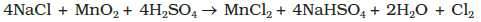
(ii) By the action of HCl on potassium permanganate.
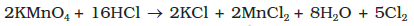
Manufacture of chlorine
(i) Deacon’s process: By oxidation of hydrogen chloride gas by
atmospheric oxygen in the presence of CuCl2 (catalyst) at 723 K.
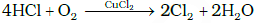
(ii) Electrolytic process: Chlorine is obtained by the electrolysis of
brine (concentrated NaCl solution). Chlorine is liberated at anode.
It is also obtained as a by–product in many chemical industries.
Properties
It is a greenish yellow gas with pungent and suffocating odour. It is
about 2-5 times heavier than air. It can be liquefied easily into greenish
yellow liquid which boils at 239 K. It is soluble in water.
Chlorine reacts with a number of metals and non-metals to form chlorides.
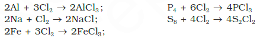
It has great affinity for hydrogen. It reacts with compounds
containing hydrogen to form HCl.
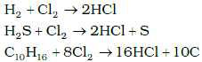
With excess ammonia, chlorine gives nitrogen and ammonium chloride
whereas with excess chlorine, nitrogen trichloride (explosive) is formed.
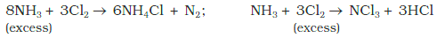
With cold and dilute alkalies chlorine produces a mixture of chloride
and hypochlorite but with hot and concentrated alkalies it gives chloride
and chlorate.
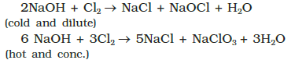
With dry slaked lime it gives bleaching powder.
The composition of bleaching powder is Ca(OCl)2.CaCl2.Ca(OH)2.2H2O.
Chlorine reacts with hydrocarbons and gives substitution products
with saturated hydrocarbons and addition products with unsaturated
hydrocarbons. For example,
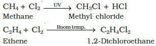
Chlorine water on standing loses its yellow colour due to the
formation of HCl and HOCl. Hypochlorous acid (HOCl) so formed, gives
nascent oxygen which is responsible for oxidising and bleaching
properties of chlorine.
(i) It oxidises ferrous to ferric and sulphite to sulphate. Chlorine
oxidises sulphur dioxide to sulphur trioxide and iodine to iodate.
In the presence of water they form sulphuric acid and iodic acid
respectively.
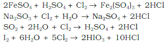
(ii) It is a powerful bleaching agent; bleaching action is due to oxidation.
Cl2 + H2O → 2HCl + O
Coloured substance + O → Colourless substance
Uses: It is used (i) for bleaching woodpulp (required for the manufacture of
paper and rayon), bleaching cotton and textiles, (ii) in the extraction of gold
and platinum (iii) in the manufacture of dyes, drugs and organic compounds
such as CCl4, CHCl3, DDT, refrigerants, etc. (iv) in sterilising drinking water
and (v) preparation of poisonous gases such as phosgene (COCl2), tear gas
(CCl3NO2), mustard gas (ClCH2CH2SCH2CH2Cl).
Hydrogen Chloride
It bleaches vegetable or organic matter in the presence of moisture.
Bleaching effect of chlorine is permanent.
Glauber prepared this acid in 1648 by heating common salt with
concentrated sulphuric acid. Davy in 1810 showed that it is a compound
of hydrogen and chlorine.
Preparation:
In laboratory, it is prepared by heating sodium chloride with
concentrated sulphuric acid.
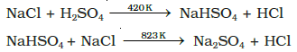
HCl gas can be dried by passing through concentrated sulphuric acid.
Properties
It is a colourless and pungent smelling gas. It is easily liquefied to a
colourless liquid (b.p.189 K) and freezes to a white crystalline solid
(f.p. 159 K). It is extremely soluble in water and ionises as follows:
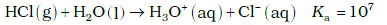
Its aqueous solution is called hydrochloric acid. High value of
dissociation constant (Ka) indicates that it is a strong acid in water.
It reacts with NH3 and gives white fumes of NH4Cl.
NH3 + HCl → NH4Cl
When three parts of concentrated HCl and one part of concentrated
HNO3 are mixed, aqua regia is formed which is used for dissolving
noble metals, e.g., gold, platinum.
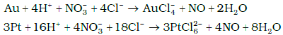
Hydrochloric acid decomposes salts of weaker acids, e.g.,
carbonates, hydrogencarbonates, sulphites, etc.
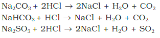
Uses: It is used (i) in the manufacture of chlorine, NH4Cl and glucose (from
corn starch), (ii) for extracting glue from bones and purifying bone black, (iii)
in medicine and as a laboratory reagent.
Oxoacids of Halogens:
Due to high electronegativity and small size, fluorine forms only one
oxoacid, HOF known as fluoric (I) acid or hypofluorous acid. The other
halogens form several oxoacids. Most of them cannot be isolated in
pure state. They are stable only in aqueous solutions or in the form of
their salts. The oxoacids of halogens are given in the following Table and their
structures are given in the following figure.
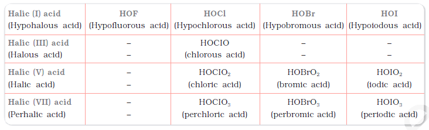
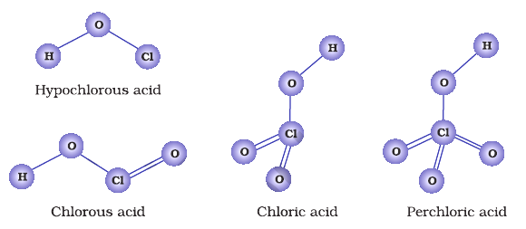
Interhalogen Compounds
When two different halogens react with each other, interhalogen
compounds are formed. They can be assigned general compositions as
XX′ , XX3′, XX5′ and XX7′
where X is halogen of larger size and X′ of
smaller size and X is more electropositive than X′. As the ratio between
radii of X and X′ increases, the number of atoms per molecule also
increases. Thus, iodine (VII) fluoride should have maximum number of
atoms as the ratio of radii between I and F should be maximum. That
is why its formula is IF7 (having maximum number of atoms).
Preparation:
The interhalogen compounds can be prepared by the direct
combination or by the action of halogen on lower interhalogen
compounds. The product formed depends upon some specific
conditions, For e.g.,
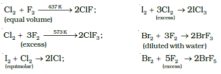
Properties:
Some properties of interhalogen compounds are given in the following Table
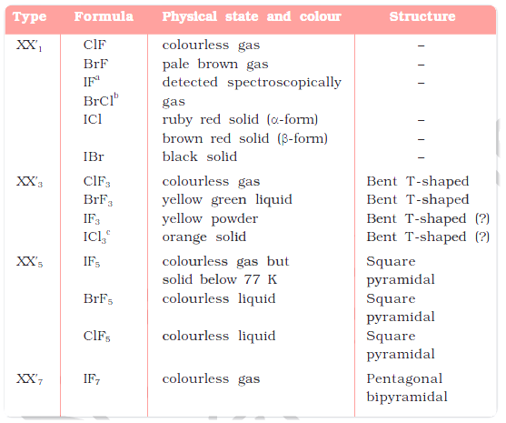
These are all covalent molecules and are diamagnetic in nature.
They are volatile solids or liquids at 298 K except ClF which is a
gas. Their physical properties are intermediate between those of
constituent halogens except that their m.p. and b.p. are a little higher
than expected.
Their chemical reactions can be compared with the individual
halogens. In general, interhalogen compounds are more reactive
than halogens (except fluorine). This is because X–X′ bond in
interhalogens is weaker than X–X bond in halogens except F–F
bond. All these undergo hydrolysis giving halide ion derived from
the smaller halogen and a hypohalite ( when XX′), halite ( when
XX′3), halate (when XX′3) and perhalate (when XX′3) anion derived
from the larger halogen.
XX' + H2O → HX' + HOX
Their molecular structures are very interesting which can be
explained on the basis of VSEPR theory . The XX3
compounds have the bent ‘T’ shape, XX5 compounds square pyramidal
and IF7 has pentagonal bipyramidal structures
Uses:
These compounds can be used as non aqueous solvents. Interhalogen
compounds are very useful fluorinating agents. ClF3 and BrF3 are used for the
production of UF6 in the enrichment of 235>U
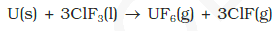